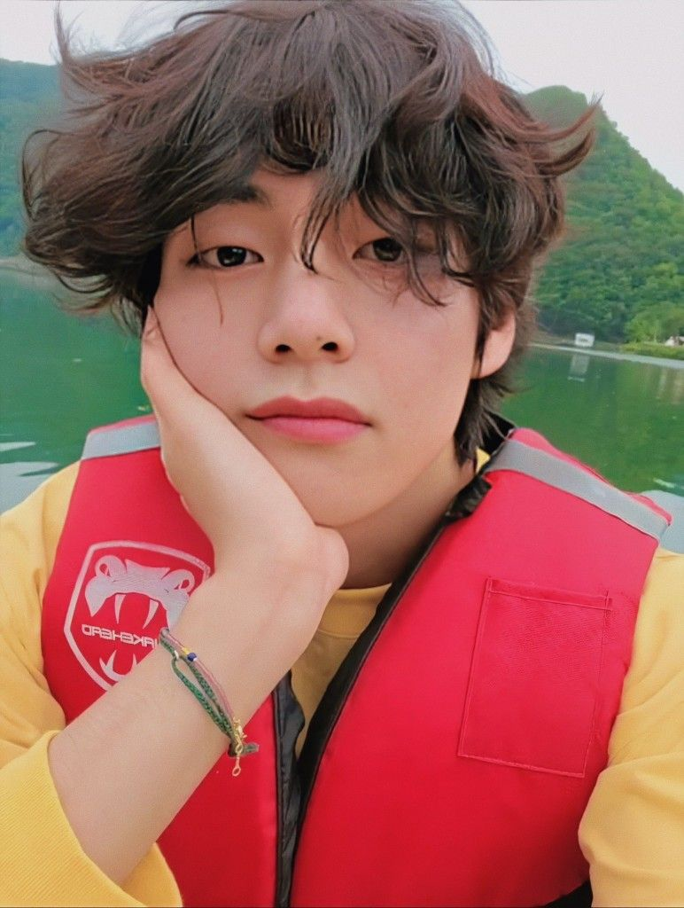
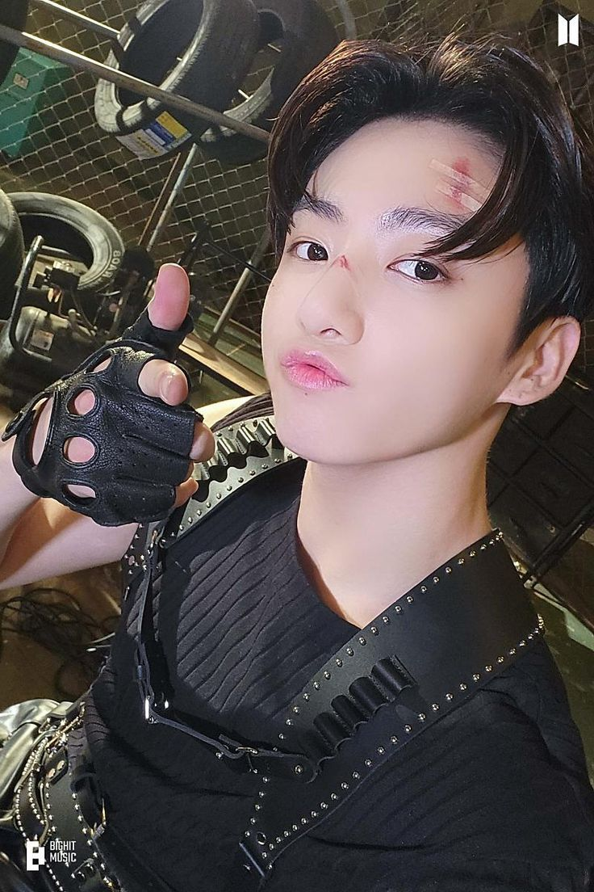
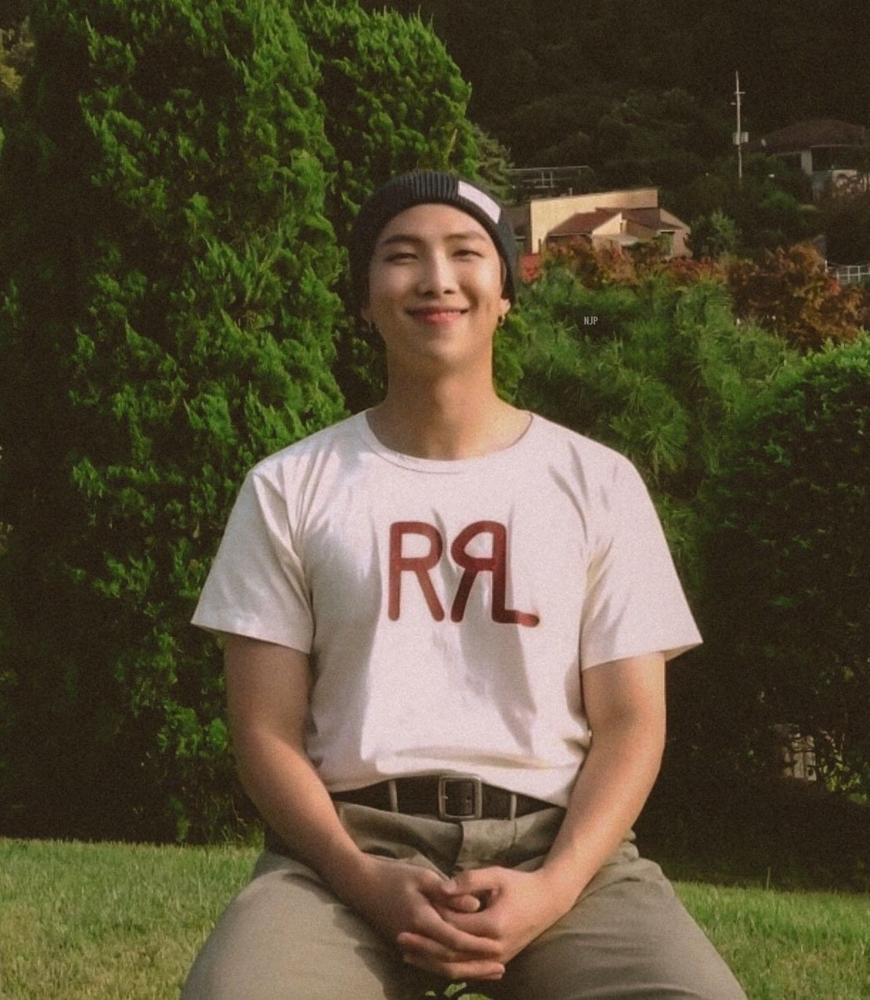

Integrantes
BTS esta conformado por 7 miembros: V, Suga, Jin, Jungkook, RM, Jimin y J-hope.
V
Kim Tae-hyung más conocido por su nombre artístico V, es un cantante, compositor y actor surcoreano. Es miembro del grupo BTS bajo la compañía Big Hit Music.
Kim Tae-hyung nació el 30 de diciembre de 1995 en Seo-gu, Daegu, Corea del Sur, y creció en Geochang-gun.Es el mayor de 3 hermanos; tiene una hermana y un hermano menor. Comenzó a aspirar a ser un cantante profesional en la escuela primaria,por lo que para lograrlo empezó a tomar clases de saxofón,con el apoyo de su padre.Se convirtió en aprendiz de Big Hit después de pasar una audición en Daegu en 2011. Después de terminar la secundaria en la Korean Arts High School en 2014,V asistió a la Global Cyber University, de donde se graduó en agosto de 2020 con una especialidad en Entretenimiento y Telecomunicación.A fecha de 2021, estudia una Maestría en Administración de Empresas en la Hanyang Cyber University.
Suga
Min Yoon-gi (Daegu, 9 de marzo de 1993), más conocido por sus nombres artísticos Suga y Agust D, es un rapero, compositor, productor, modelo y bailarín surcoreano.
Debutó en el grupo BTS en 2013 bajo la compañía Big Hit Music.En 2010, antes de debutar con BTS, formaba parte de un grupo underground de rap en su ciudad natal llamado D-Town.El 15 de agosto de 2016 publicó su primer mixtape debut en solitario titulado Agust D, del cual salieron dos vídeos musicales para los temas «Agust D» y «Give it to Me». Tiene más de 100 canciones acreditadas a su nombre por la Korea Music Copyright Association (KOMCA)
Min Yoon-gi nació el 9 de marzo de 1993 en la ciudad de Daegu, al sureste de Corea del Sur.Empezó a interesarse por la música en quinto de primaria después de ver una actuación de Stony Skunk en televisión, y fue así como empezó a escuchar a grupos hip-hop como Epik High.En segundo curso de la escuela media actuó por primera vez en un escenario interpretando el tema «Go Back» del grupo Dynamic Duo. A los trece años comenzó a aprender a utilizar la tecnología MIDI y a escribir sus propias canciones.
A los diecisiete años y gracias a un mentor, entró a formar parte de un grupo de rap underground llamado D-Town. Mientras formaba parte de esta agrupación produjo la canción «518-062», que es un tema conmemorativo a la Masacre de Gwangju. En una entrevista con la revista Grazia declaró: «Cuando trabajaba en el estudio, componía canciones o hacía ritmos e incluso los vendía. Después empecé a rapear y a hacer actuaciones de forma natural. Mientras trabajaba allí era difícil pagar la comida o el transporte. Pero aunque era difícil quería hacer música, así que lo soportaba».
En 2010 Suga participó en las audiciones Hit It llevadas a cabo por Big Hit. Quedó segundo en la competición que se celebró y entró a formar parte de la compañía el 7 de noviembre de 2010
Jin
Kim Seok-jin (en hangul, 김석진; Anyang-Gwangcheon, 4 de diciembre de 1992), conocido por su nombre artístico Jin, es un cantante, actor, modelo, presentador, compositor y bailarín surcoreano. Pertenece al grupo BTS, donde ocupa el puesto de vocalista, bailarín y visual desde 2013. Kim ha coescrito y lanzado tres canciones en solitario con BTS: «Awake» (2016), «Epiphany» (2018) y «Moon» (2020); todas han entrado en la lista digital Gaon de Corea del Sur. También apareció en la banda sonora del drama Hwarang (2016) junto a su compañero de grupo V. Por otro lado, Kim ha recibido elogios de los críticos por su falsete y su rango emocional como cantante.
Además de cantar, Kim ha participado como presentador en varios programas de música de Corea del Sur entre 2016 y 2018. En 2018 recibió la Orden al Mérito Cultural por parte del presidente surcoreano, junto a otros miembros de BTS, por su contribución a la cultura coreana.
Jin nació el 4 de diciembre de 1992 en Anyang-Gwangcheon, Corea del Sur. Su familia consiste en su madre, su padre y su hermano mayor. Mientras estaba en la escuela secundaria, Kim fue contactado en la calle por un scouter de la agencia de K-pop SM Entertainment, pero él rechazó la oferta en el momento. Asistió a la Universidad Konkuk y se graduó con un título en Arte y Actuación el 22 de febrero de 2017. Actualmente está inscrito en la escuela de posgrado de la Hanyang Cyber University para realizar estudios en otras áreas además de la música.
Jungkook
Jeon Jung-kook (Busan; 1 de septiembre de 1997), conocido como Jungkook, es un cantante y bailarín surcoreano. En 2013 debutó como integrante del grupo BTS bajo la compañía Big Hit Music.
Jungkook nació el 1 de septiembre de 1997, en Busan, Corea del Sur. Su familia consiste en su padre, su madre y un hermano mayor. Asistió a la escuela Baekyang en Busan, antes de convertirse en aprendiz y transferirse a la Singu Middle School en Seúl.
En 2011, Jungkook audicionó para participar en el programa de talentos Superstar K, cuando se realizaron audiciones en Daegu. A pesar de que no fue seleccionado, recibió ofertas de siete compañías de entretenimiento, entre ellas JYP Entertainment, Cube Entertainment, FNC Entertainment y Big Hit. Eventualmente decidió firmar con esta última empresa después de ver a RM, su compañero de BTS, interpretar rap. Como parte de su entrenamiento y previo a su debut, viajó a Los Ángeles durante el verano de 2012 para mejorar sus habilidades de baile en la academia Movement Lifestyle. En 2017 se graduó de la Escuela de Artes Escénicas de Seúl. A fecha de 2021, estudia Entretenimiento y Telecomunicación en la Global Cyber University.
RM
Kim Nam-joon (Dongjak-gu, Seúl; 12 de septiembre de 1994), más conocido por su nombre artístico RM, es un rapero, compositor y productor surcoreano. Es el líder del grupo BTS. En 2015, lanzó su primer mixtape RM.
Kim Nam-joon nació el 12 de septiembre de 1994 en Dongjak-gu, Corea del Sur. Antes de su debut, era un rapero underground el cual usaba el nombre artístico "Runch Randa"; lanzó varias canciones y colaboró con el conocido rapero Zico. Era parte del grupo surcoreano de hip hop underground Daenamhyup, el cuál consiste de Marvel J, l11ven, Supreme Boi, Iron, Kyum2, Kidoh, Samsoon, Illipse, DJ Snatch y él. El grupo tuvo actividad desde 2009 hasta 2013, cuando RM dejó su participación en el grupo para concentrarse en BTS, aunque en una llamada con Supreme Boi, dijo que algún día volvería a participar con Daenamhyup, aunque algunos miembros del grupo continuaron participando sin RM.
RM tiene muchos logros académicos notables. Alcanzó un 850 en el TOEIC cuando estaba en secundaria, probablemente debido por haber estudiado en Nueva Zelanda. También estuvo en el top 1.3% de la nación en los exámenes de entrada a la universidad en lengua, matemática, idiomas extranjeros y ciencias sociales; además, tiene un CI de 148.
Además de su lengua materna, él habla fluidamente inglés y japonés, ya que continuó estudiando japonés luego del debut de BTS, ya que todos los miembros de Big Hit reciben clases básicas de dicho idioma. También vio múltiples veces el sitcom estadounidense Friends, para ayudarle a aprender inglés.
Jimin
Park Ji-min (Busan, 13 de octubre de 1995), más conocido como Jimin (지민), es un cantante, compositor, bailarín y modelo surcoreano. En 2013 debutó como integrante del grupo BTS bajo la compañía Big Hit Music.
Jimin nació el 13 de octubre de 1995 en Geumjeong-gu, Busan, Corea del Sur. Además de su padre y madre, también tiene un hermano menor. Cuando era pequeño asistió a la Escuela Primaria Hodong y a la Yonsan Middle School. Asimismo tomó clases en la Academia Just Dance, donde aprendió distintos tipo de baile urbano como popping y locking. Antes de convertirse en aprendiz, Jimin estudió en la Escuela Superior de Artes de Busan, donde practicó danza moderna; fue el estudiante más destacado de su departamento. Audicionó para Big Hit después de que un profesor le sugiriera postular para una agencia de entretenimiento. Posteriormente se transfirió a la Escuela Superior de Artes de Corea en 2012, tras ser admitido en la compañía.
Jimin se graduó de la Global Cyber University en agosto de 2020, con una especialidad en Entretenimiento y Telecomunicación. A fecha de 2021, estudia una Maestría en Administración de Empresas en la Hanyang Cyber University.
J-Hope
Jung Ho-seok (Gwangju, 18 de febrero de 1994), conocido por su nombre artístico J-Hope (estilizado como j-hope), es un rapero, compositor, cantante, bailarín y productor surcoreano. En 2013 debutó como miembro del grupo BTS bajo la compañía Big Hit Music.
J-Hope lanzó su primer mixtape, Hope World, el 2 de marzo de 2018. El 27 de septiembre de 2019 publicó la canción «Chicken Noodle Soup», que contó con la participación de la cantante estadounidense Becky G. El tema ocupó el puesto 81 en la Billboard Hot 100, lo que lo convirtió en el primer integrante de BTS en entrar en la lista como solista.
J-Hope nació el 18 de febrero de 1994 en Gwangju, Corea del Sur. Antes de su debut con BTS, era un bailarín underground, y se presentaba bajo el nombre de Smile Hoya, nombre con el que ganó varios premios en competencias y festivales de baile, además, perteneció a dos grupos de baile callejero, GO Arts y NEURON. Estudió en la prestigiosa Academia de Baile de Seungri, y en 2009 audicionó para JYP Entertainment, donde fue admitido y llegó a presentarse junto a NEURON, compañía que posteriormente abandonaría